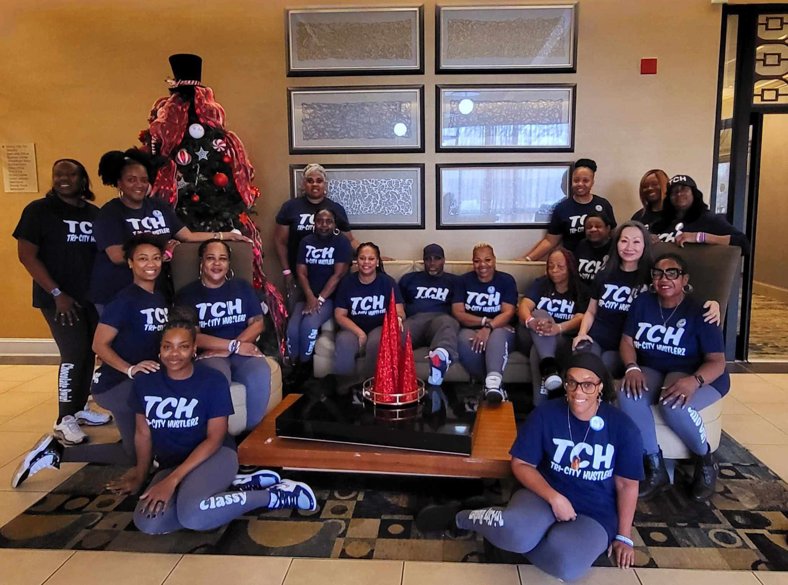

About Us
Tri-City Hustlerz (TCH) Urban Soul Line Dance Group
is based out of Greensboro, NC and known throughout
the urban/soul line dance community. Affectionately
known as TCH, the group was founded in 2011 and is
led by the Award-winning Instructor Extraordinaire,
Mr. Stefhon Cave, who instructs ALL
levels
of line dance.
Initially adopting Showtime
as his line dance name,
some of his close friends that Stefhon danced with
encouraged him to use the name Major Swagg
because
he exuded confidence in a major way. He decided to
name the ladies of his group Swagg Angelz
because
they were his girls
after a friend's group were
known as Swag Dolls
.
Swagg is added to end of each name to identify them as a member or having affiliation with TCH.